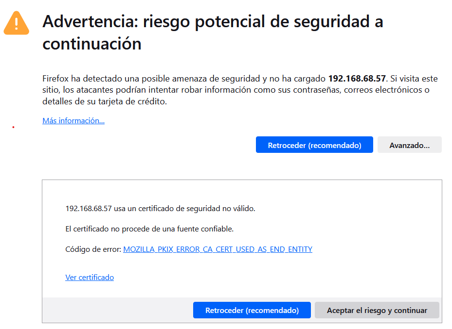

Pràctica 3: Certificat SSL/TLS¶
Objectiu¶
- Creeu un certificat SSL/TLS autosignat amb l’eina openssl.
- Configurar el servidor web Nginx perquè utilitze el certificat SSL/TLS autosignat.
- Redirigir HTTP a HTTPS
HTTPS. Creació i configuració d’un certificat SSL/TLS autosignat¶
En aquesta pràctica crearem un certificat SSL/TLS autosignat amb l’eina openssl. Una vegada creat configurarem el servidor web Nginx perquè utilitze aquest certificat.
El procés de creació d’un certificat autosignat consta dels passos següents:
- Crear una clau privada i un certificat autosignat.
- Configurar la clau privada i el certificat autosignat al servidor web.
Tingueu en compte que quan un client accedisca des d’un navegador web a un lloc web que utilitza un certificat autosignat, es mostrarà un missatge d’advertiment indicant que el certificat no és de confiança. Per exemple, en el cas de Mozilla Firefox, el missatge d’advertiment és el següent:

{kind=link}
::: note Certificat no fiable, el certificat no és de confiança, perquè no ha estat emès per una autoritat de certificació (CA). :::
Si el client accepta el certificat, el navegador web l’emmagatzemarà al magatzem de certificats i no tornarà a mostrar el missatge d’advertiment.
::: warning No es recomana utilitzar certificats autosignats a llocs web públics, per tant, aquesta pràctica s’utilitza amb fins educatius per conèixer amb detall com funciona el procés de creació i configuració d’un certificat autosignat. :::
Tasques a fer¶
En aquesta pràctica has de realitzar la instal·lació i configuració d’un certificat SSL/TLS autosignat al servidor web Nginx al teu Ubuntu Server.
A continuació es descriuen molt breument algunes de les tasques que haureu de realitzar.
- Utilitzar la resolució estàtica, modificant el fitxer
/etc/hostsde l’ordinador des del qual accedirem a la pàgina i poder accedir-hi mitjançant nom de domini. - Automatitzar la instal·lació d’una pila LEMP (instal·la cada element per separat)
- Automatitzar la creació i configuració d’un certificat autosignat SSL/TLS amb openssl per al servidor web Nginx.
- Comprovar que s’hi pot accedir, tant per http com per https des d’un navegador web.
- Redirigir http a https.
- Comprovar el bon funcionament de la redirecció.
- Documentar en markdown el procés.
Passos detallats¶
Instal·lació de la pila LEMP¶
- Crea el
scriptper automatitzar la creació de la pila en un linux - Executa el
script - Comprova que s’ha instal·lat tot correctament
Creació del certificat autosignat¶
Per a crear el certificat autosignat utilitzarem openssl:
Comandament a utilitzar:
sudo openssl req -x509 -nodes -days 365 -newkey rsa:2048 -keyout /etc/ssl/private/nginx-selfsigned.key -out /etc/ssl/certs/nginx-selfsigned.crt
- req: La subordre req s’utilitza per crear sol·licituds de certificat en format PKCS#10. També es pot utilitzar per crear certificats autosignats, que serà l’ús que li donarem en aquesta pràctica.
- -x509: Indica que volem crear un certificat autosignat en comptes d’una sol·licitud de certificat, que s’enviaria a una autoritat de certificació.
- -nodes: Indica que la clau privada del certificat no estarà protegida per contrasenya i estarà sense xifrar. Això permet que les aplicacions utilitzen el certificat sense haver d’introduir una contrasenya cada vegada que s’utilitze.
- -days 365 :Aquest paràmetre indica la validesa del certificat. En aquest cas, hem configurat una validesa de 365 dies.
- -newkey rsa:2048: Aquest paràmetre indica que volem generar una nova clau privada RSA de 2048 bits juntament amb el certificat. La longitud de clau de 2048 bits és un estàndard raonable per a la seguretat actualment.
- -keyout /etc/ssl/ private /nginx-selfsigned.key: Indica la ubicació i el nom del fitxer on es desarà la clau privada generada. En aquest cas, hem seleccionat que es guarde en la ruta i nom
/etc/ssl/private/nginx-selfsigned.key. - -out /etc/ssl/certs/nginx-selfsigned.crt: Indica la ubicació i el nom del fitxer on es desarà el certificat. En aquest cas, hem seleccionat que es guarde en la ruta i nom
/etc/ssl/certs/nginx-selfsigned.crt.
En executar l’ordre haurem d’introduir una sèrie de dades per teclat que s’afegiran al certificat.
Les dades que hem d’introduir són les següents:
- Codi del país de 2 caràcters que identifica el país on s’emet el certificat. Per exemple,ES per a Espanya.
- Província on s’emet el certificat.
- Localitat on s´emet el certificat.
- Nom de l’organització per a la qual s’emet el certificat.
- Nom de la unitat o secció de l’organització.
- Nom del domini per al qual s’emet el certificat.
- email.
Automatitzar la creació del certificat autosignat¶
Per automatitzar la creació d’un certificat autosignat des d’un script de Bash, podem fer ús del paràmetre subj que ens permet passar les dades que s’adjunten al certificat com a arguments des de la línia d’ordres.
Exemple
#!/bin/bash
set -x
# Configuramos las variables con los datos que necesita el certificado
OPENSSL_COUNTRY="ES"
OPENSSL_PROVINCE="Valencia"
OPENSSL_LOCALITY="Tavernes de la Valldigna"
OPENSSL_ORGANIZATION="IES Jaume II el Just"
OPENSSL_ORGUNIT="Departamento de Informatica"
OPENSSL_COMMON_NAME="practica-https.local"
OPENSSL_EMAIL="emico@ieseljust.com"
# Creamos el certificado autofirmado
sudo openssl req -x509 -nodes -days 365 -newkey rsa:2048 -keyout /etc/ssl/private/nginx-selfsigned.key -out /etc/ssl/certs/nginx-selfsigned.crt -subj "/C=$OPENSSL_COUNTRY/ST=$OPENSSL_PROVINCE/L=$OPENSSL_LOCALITY/O=$OPENSSL_ORGANIZATION/OU=$OPENSSL_ORGUNIT/CN=$OPENSSL_COMMON_NAME/emailAddress=$OPENSSL_EMAIL"
Consultar certificat¶
Com consultar la informació del subjecte del certificat
openssl x509 -in /etc/ssl/certs/nginx-selfsigned.crt -noout -subject
Com consultar la data de caducitat del certificat
openssl x509 -in /etc/ssl/certs/nginx-selfsigned.crt -noout -dates
Configurar un Block SSL/TSL en Nginx¶
Configurar el Bloc SSL
Prèviament haurem de tindre:
- La clau privada.
- El certificat.
- Tant els clients com el servidor poden accedir-se i resolen el nom del servidor web.
- El port 443 està obert al firewall del servidor local.
Configurar el site segur ssl en /etc/nginx/sites-available/segur:
server {
listen 443 ssl;
server_name intranet.local;
ssl_certificate /etc/ssl/certs/nginx-selfsigned.crt;
ssl_certificate_key /etc/ssl/private/nginx-selfsigned.key;
root /var/www/segur;
index index.html;
location / {
try_files $uri $uri/ =404;
}
}
Crear el site segur
- Crear el directori
/var/www/segur - Crear el document d’inici
index.html. Per exemple:
<!DOCTYPE html>
<html lang="ca">
<head>
<meta charset="UTF-8">
<meta name="viewport" content="width=device-width, initial-scale=1.0">
</head>
<body>
<h1>PRÀCTICA WEB ESTÀTICA HTTPS</h1>
<h2>Site Segur Local - intranet</h2>
<h3>Servidor nginx</h3>
</body>
</html>
Recarregar nginx
Per tal d’aplicar els canvis:
sudo nginx -t
sudo systemctl reload nginx
Verificar el correcte funcionement
Des d’un client, accedir per IP:
https://IP_server
Des d’un client, accedir per nom:
https://nom_server
Block de redirecció de HTTP a HTTPS¶
És habitual que l’accés a un lloc utilitzant http es redirigisca automàticament al lloc https.
En nginx caldria tindre, en el bloc per defecte default, establida la redirecció:
server {
listen 80;
server_name nom_server;
return 301 https://nom_server;
}
Verificació i recàrrega de nginx
sudo nginx -t
sudo systemctl reload nginx
Accedeix des del navegador d’un client:
http://nom_server
I veuràs que es carrega l’adreça https://nom_server